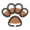

貓咪知識
註冊
登入
回到首頁
介紹貓咪
交流區域
養貓新手村

[養貓必備7寶物]
各種貓食→主食罐、貓乾糧、貓鮮食、貓零食
貓的餐具→貓碗、飲水用品
貓的便所→貓砂、貓砂盆
貓用清潔用品→牙膏、小牙刷、指甲剪、潔耳液
貓窩→平面式/包覆式/貓屋(有屋頂的)
貓抓板/貓抓柱/貓樹
外出籠
[養貓需具備的2心理]
耐心
愛心
更多詳細資訊
養貓的禁忌
[貓咪19種禁忌食物]
巧克力
蔥類
骨頭
味精
鮑魚
生魚肉/家禽肉
竹莢魚、鯖魚
辛香料
生蛋白
咖啡因、茶鹼
更多詳細資訊
幼貓養成記
[照顧幼貓8大注意]
要按時餵奶
使用貓咪專用替代奶粉
幫助小貓大小便(每隔2小時)
為小貓準備貓窩
稍大的貓可餵貓糧、貓牛奶為輔
讓小貓多休息少打擾
教滿月的奶貓使用貓砂
更多詳細資訊